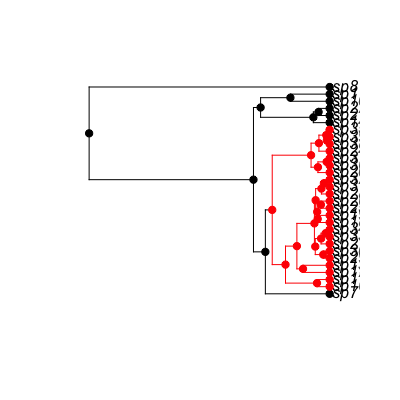
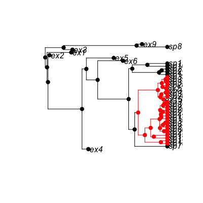
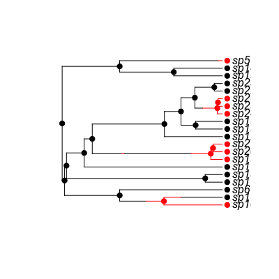
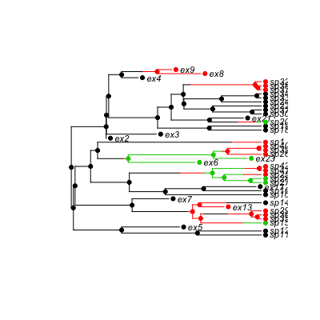
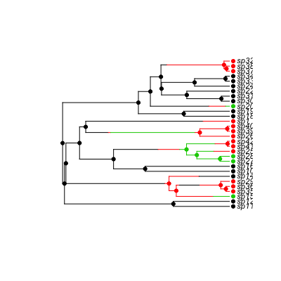

Evolve Birth-Death Trees
Usage
trees(pars, type=c("bisse", "bisseness", "bd", "classe", "geosse", "musse", "quasse", "yule"), n=1, max.taxa=Inf, max.t=Inf, include.extinct=FALSE, ...)tree.bisse(pars, max.taxa=Inf, max.t=Inf, include.extinct=FALSE, x0=NA) tree.musse(pars, max.taxa=Inf, max.t=Inf, include.extinct=FALSE, x0=NA) tree.musse.multitrait(pars, n.trait, depth, max.taxa=Inf, max.t=Inf, include.extinct=FALSE, x0=NA)tree.quasse(pars, max.taxa=Inf, max.t=Inf, include.extinct=FALSE, x0=NA, single.lineage=TRUE, verbose=FALSE)tree.bisseness(pars, max.taxa=Inf, max.t=Inf, include.extinct=FALSE, x0=NA)tree.classe(pars, max.taxa=Inf, max.t=Inf, include.extinct=FALSE, x0=NA)tree.geosse(pars, max.taxa=Inf, max.t=Inf, include.extinct=FALSE, x0=NA)tree.bd(pars, max.taxa=Inf, max.t=Inf, include.extinct=FALSE) tree.yule(pars, max.taxa=Inf, max.t=Inf, include.extinct=FALSE)prune(phy, to.drop=NULL)
Arguments
- pars
- Vector of parameters. The parameters must be in the same
order as an unconstrained likelihood function returned by
make.x, for tree type x. The MuSSE simulator automatically detects the appropriate number of states, given a parameter vector. - type
- Type of tree to generate: May be "bisse" or "bd".
- n
- How many trees to generate?
- max.taxa
- Maximum number of taxa to include in the tree. If
Inf, then the tree will be evolved untilmax.ttime has passed. - max.t
- Maximum length to evolve the phylogeny over. If
Inf(the default), then the tree will evolve untilmax.taxaextant taxa are present. - include.extinct
- Logical: should extinct taxa be included in
the final phylogeny? And should extinct trees be returned by
trees? - x0
- Initial character state at the root (state 0 or 1). A value
of
NAwill randomly choose a state from the model's equilibrium distribution for a BiSSE, ClaSSE, or GeoSSE model, but a non-NA value must be specified for MuSSE and QuaSSE. - n.trait, depth
- For
tree.musse.multitraitonly, these specify the number of binary traits and the style of parameters (with the same meaning as inmake.musse.multitrait). Theparsargument then needs to be in the same order as a likelihood function created bymake.musse.multitraitwith these arguments (this interface may be improved in future -- email me if you find this annoying). - single.lineage
- (
tree.quasseonly): Start simulation with a single lineage? IfFALSE, then the simulation starts with two lineages in statex0(i.e., immediately following a speciation event). - verbose
- (
tree.quasseonly): print verbose details about tree simuations. This can be reassuring for really large trees. - ...
- Additional arguments
- phy
- A phylogeny, possibly with extinct species, produced by one of the tree evolving functions.
- to.drop
- Optional vector with the species names to drop.
Description
Evolves one or more trees under the BiSSE (Binary State Speciation and Extinction), MuSSE (Multi-State Speciation and Extinction), BiSSE-ness (BiSSE-node enhanced state shift), ClaSSE (Cladogenetic State change Speciation and Extinction), or GeoSSE (Geographic State Speciation and Extinction) model, or a simple character independent birth-death model. For the SSE models, it simultaneously evolves a character that affects speciation and/or extinction, and the tree itself.
Details
The phylogeny will begin from a single lineage in state x0, but
the final phylogeny will include only branches above the first split.
tree.bisse may return an extinct phylogeny, and trees
might return extinct phylogenies if include.extinct is
TRUE.
Note
There are some logic problems around the creation of zero and one species trees; this will cause occasional errors when running the above functions. Things will change to fix this soon. All these functions may change in the near future.
Value
A phylo phylogenetic tree (ape format), or for
bisse.trees, a list of phylo trees.
The trees will have an element tip.state that contains the
binary state information.
Examples
pars <- c(0.1, 0.2, 0.03, 0.03, 0.01, 0.01) set.seed(3) phy <- tree.bisse(pars, max.taxa=30, x0=0) phy$tip.statesp7 sp8 sp10 sp11 sp12 sp13 sp14 sp16 sp17 sp18 sp19 sp20 sp21 sp22 sp24 sp25 0 0 0 0 1 1 0 1 1 1 1 1 0 0 1 1 sp26 sp27 sp28 sp29 sp30 sp31 sp32 sp33 sp34 sp35 sp36 sp37 sp38 sp39 1 1 1 1 1 1 1 1 1 1 1 1 1 1h <- history.from.sim.discrete(phy, 0:1) plot(h, phy)
## Retain extinct species: set.seed(3) phy2 <- tree.bisse(pars, max.taxa=30, x0=0, include.extinct=TRUE) h2 <- history.from.sim.discrete(phy2, 0:1) plot(h2, phy2)
#### MuSSE: ## Two states pars <- c(.1, .2, .03, .04, 0.05, 0.1) set.seed(2) phy <- tree.musse(pars, 20, x0=1) h <- history.from.sim.discrete(phy, 1:2) plot(h, phy)
## A 3-state example where movement is only allowed between neighbouring ## states (1 <-> 2 <-> 3), and where speciation and extinction rates ## increase moving from 1 -> 2 -> 3: pars <- c(.1, .15, .2, # lambda 1, 2, 3 .03, .045, .06, # mu 1, 2, 3 .05, 0, # q12, q13 .05, .05, # q21, q23 0, .05) # q31, q32 set.seed(2) phy <- tree.musse(pars, 30, x0=1, include.extinct=TRUE) h <- history.from.sim.discrete(phy, 1:3) plot(h, phy, cex=.7)
## And with extinct taxa pruned: phy2 <- prune(phy) h2 <- history.from.sim.discrete(phy2, 1:3) plot(h2, phy2, cex=.7)
## This can all be done in one step (and is by default): set.seed(2) phy <- tree.musse(pars, 30, x0=1) h <- history.from.sim.discrete(phy, 1:3) plot(h, phy, cex=.7)